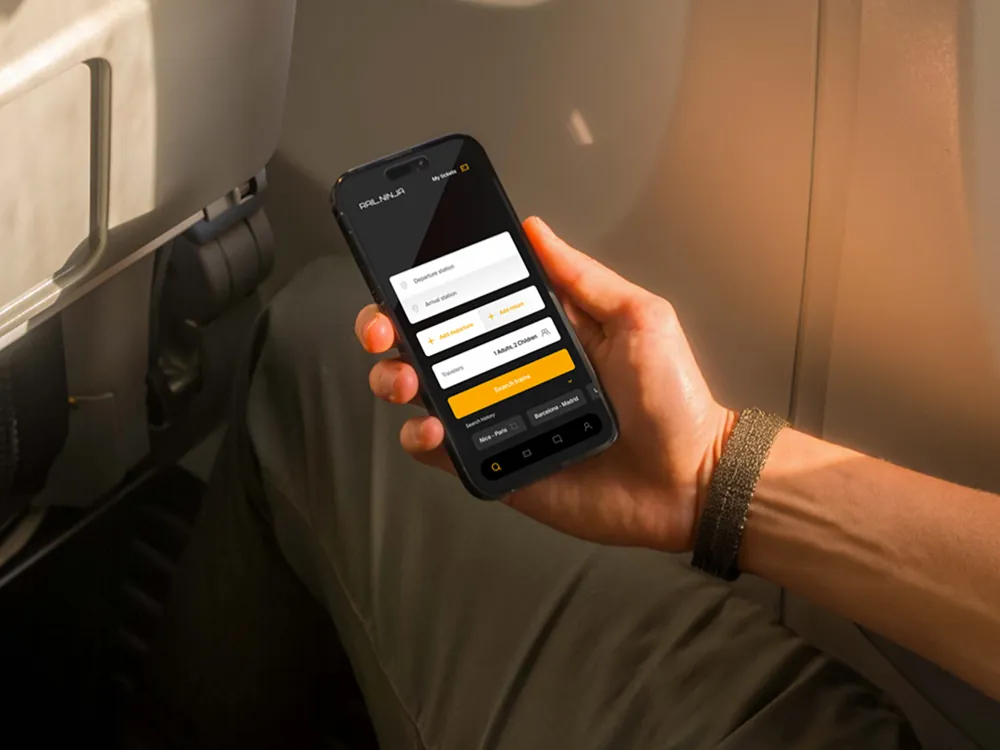
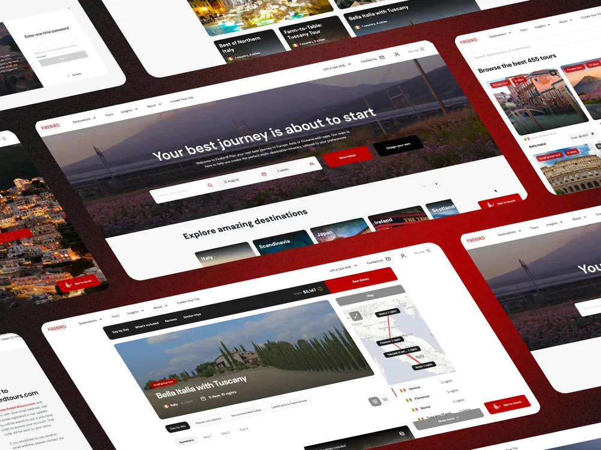

ヤル・ルチキン
Yar Luchkin
プロダクトデザイナー Product designer
◀ベオグラードBelgrade
東京Tokyo▶
I design marketplaces and travel products used by millions of people, and the design systems that keep them consistent.
Right now I work on Playerok, a marketplace for digital goods with 4M+ users. Before that I led product design for the tours line at Firebird Tours, the group behind Rail Ninja, and built their multi-brand design system.
My background is in advertising and intercultural communication, so I design for people who use a product in their second or third language. I’m looking for a product design role in Japan.
- Based in
- Belgrade, Serbia
- Looking for
- Product design roles in Japan, with relocation
- Focus
- Design systems, booking and checkout flows, marketplaces
- Languages
- English, professional
Japanese, intermediate (N4–N3) and improving
Russian, native - Education
- BA in Advertising and PR, HSE University, Moscow
Selected work
Three products I worked on for over two years and one personal concept.

A design system for four travel products
One multi-brand component library behind Firebird Tours, Rail Ninja, Triptile and highspeedtrains.com.

Rail Ninja: booking train tickets across countries
Search, timetables, seat choice and checkout for a train ticket platform handling over 1M tickets a year.

Firebird Tours: tours for travellers and a tool for agents
Consumer website and apps for booking tours, plus AGORA, the internal tool travel agents work in every day.

TON Learn: learning Web3 inside TelegramConcept
A concept for a Telegram Mini App that teaches newcomers the basics of the TON blockchain and keeps their wallets safe.
Talks and workshops
I speak at Galary Design, a Tokyo community of about 660 UX/UI designers.
- 11 participants
The first steps towards your design system
Hands-on workshop: we built a small design system in Figma together, from foundations to the first documented components. Online, in English, with Japanese where it helped participants.
- 50 sign-ups
Intro to design systems
What separates a UI kit from a design system, why teams need one, and how to start. Online, in English, with Japanese where it helped participants.
Experience
Five years, from communications to product design.
- 2026–now
Playerok
Product designer, contract, remote
C2C marketplace for digital goods with 4M+ users and 250k+ listings. I design the home page, event sections and catalogue screens, and audit the purchase flow with PMs and the design lead.
- 2023–2026
Firebird Tours
Product designer, led design for the tours line
Travel-tech group behind Rail Ninja, Triptile and highspeedtrains.com. Built the multi-brand design system, a hotel booking service and worked with one junior designer.
- 2023
Interium
Senior project lead, then deputy director
Communications agency in Moscow. Ran Design Factory 2.0, a national design competition, and led social media rebrands for federal and city public-sector clients.
- 2022–2023
GK MRC
In-house designer
HR and staffing company. Ads, landing pages, branding and merch; also ran ad campaigns and worked with print vendors.
- 2021–2023
Interium
Freelance designer
Presentations and social media visuals for brands like Realme, SIBUR and EuroChem.
- 2021
LVL UP
PR and localization, project contract
Adapted English press kits for game launches by EA and Garena for the Russian-speaking market.

About
I started in PR and advertising, localizing game launches and running campaigns, and moved into design through agency work. That path shows in how I work: I care about who reads the screen, in which language, and what they need to decide.
In product teams I usually sit between design and engineering. I like turning a messy set of screens into a system that a team can grow without me.
I’ve visited Japan twice and keep studying Japanese. I work in English and Figma, and I’m comfortable with ProtoPie, Framer and Adobe tools.